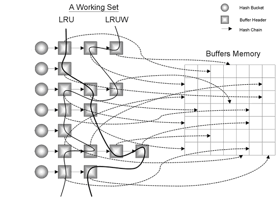

HELLO,
MY NAME IS XuJianGuo AND THIS IS MY BLOG
世界那么大，我想跟你谈谈Buffer Cache
什么是Buffer Cache
Buffer Cache即数据高速缓存区，简单的说就是一块含有许多数据块的内存区域，这些数据块主要是数据文件中数据块的拷贝。Buffer Cache出现的原因跟CPU中的高速缓存一样，为了提供存取速度而出现的一种解决方案。Buffer Cache的主要功能包括下面几点：
- 通过缓存数据，减少物理 IO。
- 构造CR块，提供一致性读。
- 提供 lock/latch 机制，提供并发访问一个数据块的功能。
内存结构
在Buffer Cache中主要使用链表的结构对数据块进行连接，为了加快进程对数据块的访问速度，所以使用Hash，下面我们一一介绍图中的结构：
Buffers Memory：Buffer Cache中的内存区域，以数据块的形式划分。图中的每个格子就是代表着一个数据块，整个网格就是Buffer Cache的存储区。
Buffer Header：每当一个数据块被读入Buffer Cache的时候，就会构造一个Buffer Header，这个Buffer Header的主要作用是记录数据块的地址，当你使用链表的形式将Buffer Header连接起来的时候，你具体要访问的是数据块，所以要记录数据块地址，当然还要记录数据块的状态，所在的链表类型，还有数据块被访问的次数，这些信息的提供都是为一些操作提供信息。
Hash Bucket：我们从图上可以清除看到一个Hash Bucket就连接很多Buffer Header，在这么大的内存区域中怎么找到Buffer Header呢，就是使用hash算法，通过计算得出是在哪个Bucket上，定位后就可以在Bucket上查找自己想要的哪个数据块了。
Hash Chain：链表结构，看图就懂了。
LRU：最近最少使用算法，解决的问题是在Buffer Cache中如何数据块的空间都满了之后，需要清理数据块腾出空间给新的数据块。这里使用LRU找出最近最少使用的数据块，然后对它清理。实际上的整个过程是这样的：在Buffer Cache中，维护着一条LRU链表，当构造一个数据块的时候，插入链表队列中，就是一个FIFO的结构，最前面的一个肯定是最近最少使用的，如果它最近被使用了，那么肯定从队列从出列在插入到队列尾部去了，不会成为最少使用的一个。
LRUW：脏数据链表。它跟LRU链表最大的不同就是：LRU上是干净的数据块，LRUW是脏数据块。在Buffer Cache中对这些脏的数据块也是通过链表连接起来，然后通过LRU算法找出需要通过DB Writer写回到数据文件中的数据块。
数据块状态
在Buffer Cache中的数据块有很多状态，了解这些状态有助于我们理解各种算法各种底层操作的实现。
- FREE(0)=可以被重用的数据块
- XCURRENT(1)=实例以排他方式获取的当前模式数据块
- SCURRENT(2)=可以与其他实例共享的当前模式数据块
- CR(3)=作为一致性读镜像的数据块，永远不会被写入磁盘
- READING(4)=正在从磁盘读出的数据块
- MRECOVERY(5)=正在进行介质恢复的数据块
- IRECOVERY(6)=正在进行实例恢复的数据块
x$bh这个数据字段可以查看在Buffer Cache分配的Buffer Header的信息，我们通过下面的额SQL可以看到Buffer Cache的数据块状态。
SQL> select distinct state from x$bh;
STATE
----------
1
3
0
普通用户是没有权限去查看，系统用户也不能把x$bh直接赋权限给普通用户，所以我采用了下面的方法：
SQL> create view xujianguo$bh as select * from x$bh;
SQL> grant select on xujianguo$bh to xujianguo;
SQL> create public synonym xujianguo$bh for xujianguo$bh;
我们尝试从最开始来看整个数据块状态的变化过程。
创建一个表
SQL> create table test_buffer_cache(id int, name varchar(10));
Table created.
清空Buffer Cache，不要让之前的数据干扰我们。
SQL> alter system flush buffer_cache;
System altered.
看看此时清空后的对应表在Buffer Cache中的数据块状态。
SQL> select
2 o.object_name,
3 decode(state, 0, 'free', 1, 'xcur', 2, 'scur', 3, 'cr', 4, 'read', 5, 'mrec', 6, 'irec', 7, 'write', 8, 'pi') state,
4 count(*) blocks
5 from xujianguo$bh b, dba_objects o
6 where b.obj = o.data_object_id
7 and o.object_name = 'TEST_BUFFER_CACHE'
8 group by o.object_name, state
9 order by blocks desc;
OBJECT_NAME STATE BLOCKS
--------------------------- ----- ----------
TEST_BUFFER_CACHE free 11
当我们清空了Buffer Cache以后，我们对应的有free数据块，这个是前面本身test_buffer_cache就有cur块，但是清空后就变成了free块，也就是说原理的链表结构还在，只是清空了数据块的内容而已。
查询数据，然后看看Buffer Cache中块的状态。
SQL> select * from test_buffer_cache;
ID NAME
---------- ----------
1 xujianguo
2 top
SQL> select
2 o.object_name,
3 decode(state, 0, 'free', 1, 'xcur', 2, 'scur', 3, 'cr', 4, 'read', 5, 'mrec', 6, 'irec', 7, 'write', 8, 'pi') state,
4 count(*) blocks
5 from xujianguo$bh b, dba_objects o
6 where b.obj = o.data_object_id
7 and o.object_name = 'TEST_BUFFER_CACHE'
8 group by o.object_name, state
9 order by blocks desc;
OBJECT_NAME STATE BLOCKS
------------------------- ----- ----------
TEST_BUFFER_CACHE free 10
TEST_BUFFER_CACHE xcur 6
从上面我们可以知道，查询只会有cur块的出现。
下面我们update一下，看看数据块的状态。
SQL> update test_buffer_cache set name='topview' where name='top';
1 row updated.
SQL> select
2 o.object_name,
3 decode(state, 0, 'free', 1, 'xcur', 2, 'scur', 3, 'cr', 4, 'read', 5, 'mrec', 6, 'irec', 7, 'write', 8, 'pi') state,
4 count(*) blocks
5 from xujianguo$bh b, dba_objects o
6 where b.obj = o.data_object_id
7 and o.object_name = 'TEST_BUFFER_CACHE'
8 group by o.object_name, state
9 order by blocks desc;
OBJECT_NAME STATE BLOCKS
----------------------- ----- ----------
TEST_BUFFER_CACHE free 10
TEST_BUFFER_CACHE xcur 6
TEST_BUFFER_CACHE cr 1
当我们执行更新操作的时候，Buffer Cache中就会产生cr块，用来解决一致性读的问题。